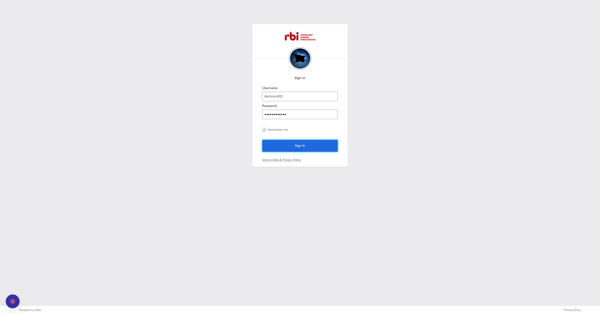
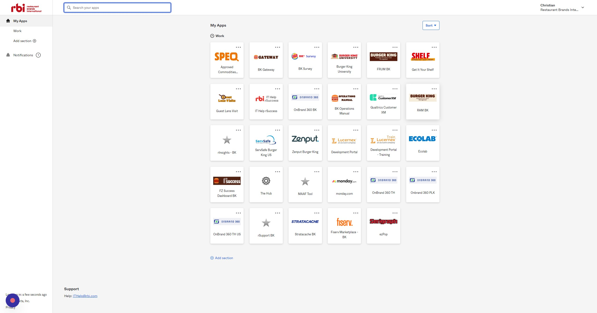
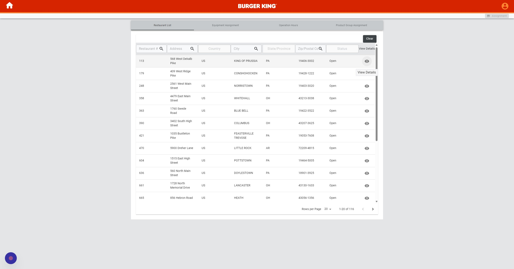
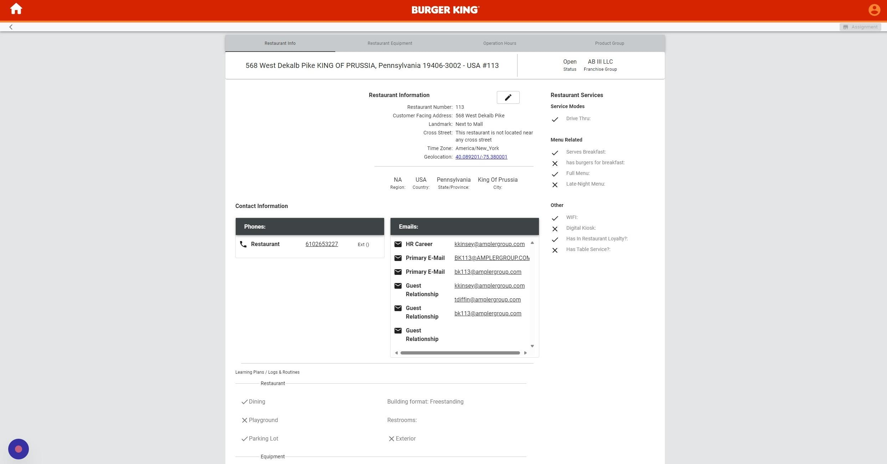
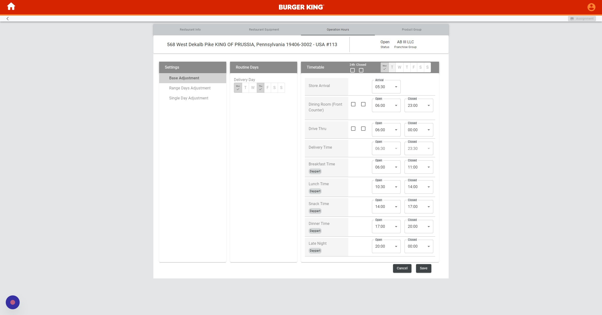
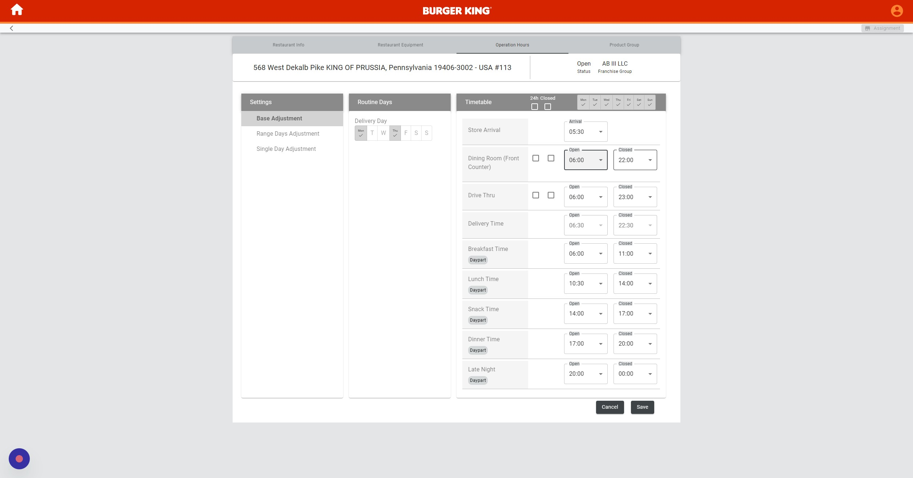
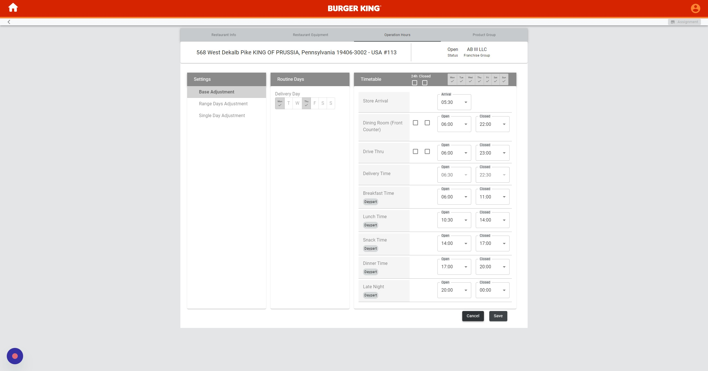
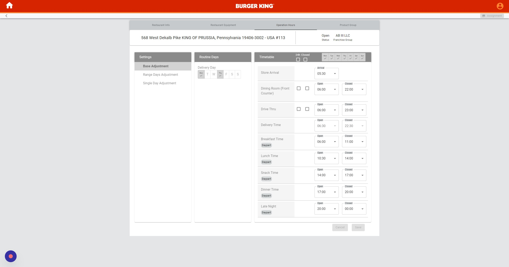
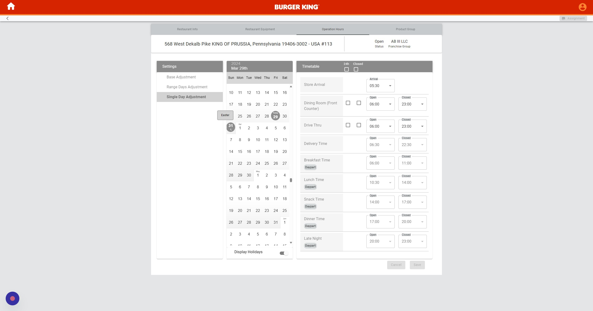
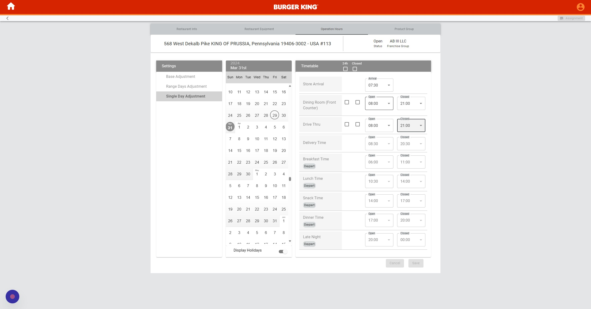

-
1Navigate to https://rbi.okta.com/
-
2Click this button.

-
3Click "RAM BK"

-
4Select the restaurant you are adjusting.

-
5Click "Operation Hours"

Base Adjustment
-
6Click "Base Adjustment"
-
7Select which days you are adjusting.

-
8Adjust the times for Opening/Closing.

-
9Click "Save"

Single Day Adjustment
-
10Click "Single Day Adjustment"

-
11Select the day you would like to adjust.

-
12Adjust the times for Opening/Closing.

-
13Click "Save"